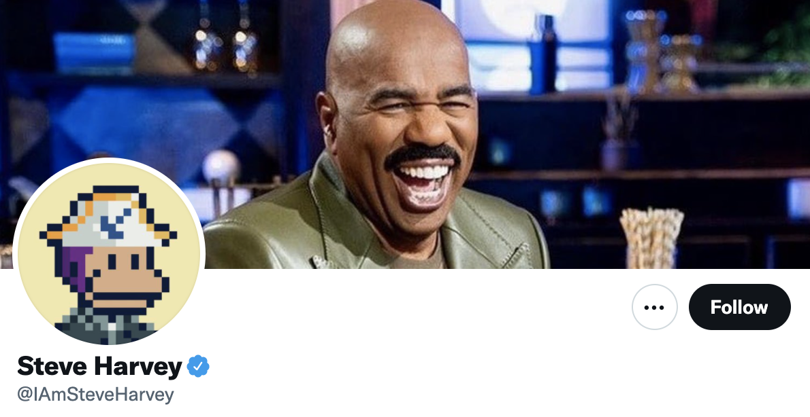
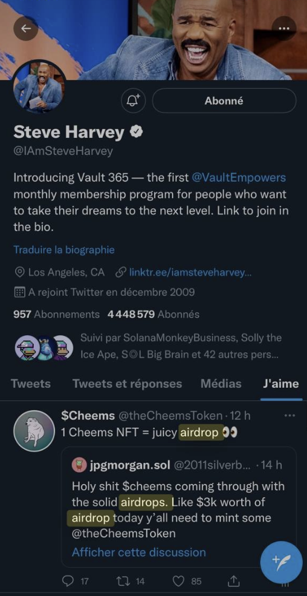

 Back in 2021, Comedian Steve Harvey changed his Twitter profile picture to a Solana Monkey Business NFT. The NFT collection is a set of 5,000 randomly generated images of pixelated cartoon monkeys based on Solana.⠀
With this NFT, it was easy to find Steve Harvey's wallet. People then discovered that Steve Harvey was owning 10m $CHEEMS within the same wallet.
He even liked one of our tweets, kek 